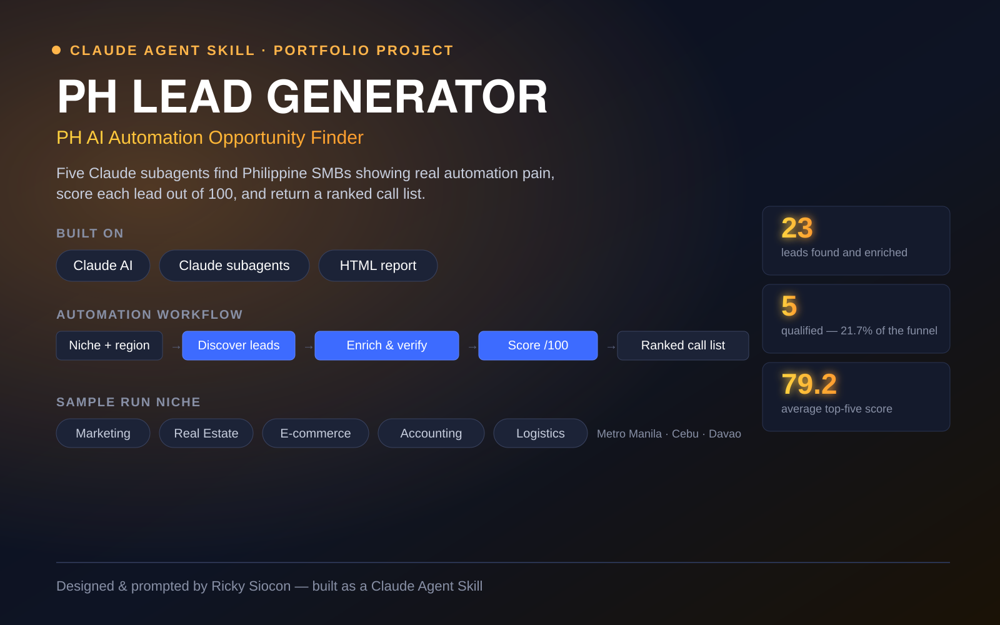

Claude AI
Claude AI n8n
n8n Zapier
Zapier Supabase
Supabase
Claude Agent Skill
PH Lead Generator
Built with 5 specialized Claude subagents — each with its own persona and role — that research, score, and validate AI-automation opportunities for Philippine businesses.
Claude AI
n8n
Pinecone
Supabase